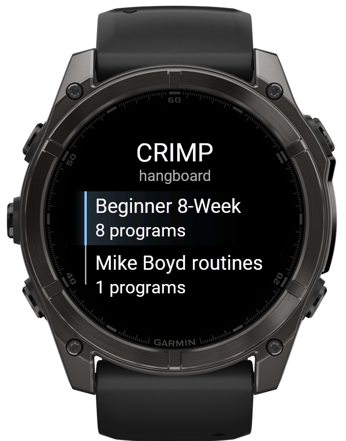

CRIMP Rarely Injures My Pulleys
A hangboard timer for your Garmin watch. Hang when it says hang, rest when it says rest, and let the watch do the counting.
Free & open source · fēnix 6–9, epix, Forerunner, Enduro & MARQ · GPL-3.0-or-later

A large number for every hang and rest, readable from a dead hang.
A beep and a buzz on every change, plus a tick for each of the last three seconds. Your eyes are busy being on the board.
The 8-week beginner plan, a 7/3 repeaters routine and a McLeod session are ready to go, organised in folders.
Plans are described in a JSON file with steps and repeats. Add your own without writing any code.
START pauses, UP and DOWN skip steps, and BACK asks before quitting, so a stray press does not end your session.
Each session is saved as a Strength activity with a lap for every hang. Heart rate and training time end up in Garmin Connect.
Every plan opens with a description screen. Nothing is started or recorded until you press START.
Edit, add and preview plans in a client-side editor, then download a new programs.json. Nothing is uploaded.
The Beginner 8-Week folder follows the plan from 99Boulders. Each week is 10-second hangs, 4 reps per set, and 2 minutes between sets.
| Week | Sets | Rest between reps |
|---|---|---|
| 1 | 3 | 30 s |
| 2, 3 | 4 | 30 s |
| 4 | 5 | 30 s |
| 5 | 3 | 20 s |
| 6, 7 | 4 | 20 s |
| 8 | 5 | 20 s |
7 s hang, 3 s rest, 5 reps per set, 4 sets with 3 min rest between sets. Run it once for each grip type.
A full session with jug warm-up, work sets on a 20 mm edge (open crimp, half crimp, three finger open drag) and a cool-down.
fēnix 6: 6, 6S, 6 Pro, 6S Pro, 6X Pro
fēnix 7: 7, 7S, 7X, 7 Pro, 7S Pro, 7X Pro
fēnix 8: 43 mm, 47 mm / 51 mm, Pro, Solar
fēnix 9: 43 mm, 47 mm / 51 mm, Pro, Pro Solar
fēnix E
epix: epix (Gen 2), epix Pro (Gen 2) 42 mm, 47 mm, 51 mm
Forerunner: 165, 165 Music, 170, 170 Music, 255, 255 Music, 255S, 255S Music, 265, 265S,
570 (42 mm, 47 mm), 955, 965, 970
Enduro: 3, 4
MARQ: Gen 2, Gen 2 Aviator, Gen 3
The newer models (fēnix 8 Pro/Solar, fēnix 9, fēnix E, epix, Forerunner 165/170/255/265/570/955/965, Enduro and MARQ) build without errors but have not been tested on a real watch. Please report anything that looks wrong.
Follow the build instructions and run
just build fenix7s (use your own model). A file built for another model will not run.
Copy bin/<model>.prg into the GARMIN/Apps/ folder on the watch.
Eject the watch, open CRIMP from the app list, pick a plan, and press START.
Plans are steps and repeats. between runs between repetitions, never after the last one, so you
never wait for a rest nobody needs. Every plan needs a description: it is the first screen on the
watch. See the program format, or
use the browser plan editor.
CRIMP is free. If it saves your pulleys, a coffee is always appreciated.
☕ Buy me a coffee